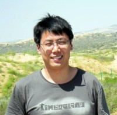

Research
I am interested in hardware/software methodology and architecture design for security and reliability of embedded processors, including:
- Trustworthy RISC-V processor and System-on-Chip architecture
- Design automation for security and reliability
- Processor architecture for soft errors
- Temporal and spatial memory safety errors
Publication Profiles
Recent Publications
- Tuo Li, Muhammad Shafique, Jude Angelo Ambrose, Jörg Henkel, Sri Parameswaran:
Fine-Grained Checkpoint Recovery for Application-Specific Instruction-Set Processors. IEEE Trans. Computers 66(4): 647-660 (2017) pdf
@ARTICLE{LSAHP17,
author={T. {Li} and M. {Shafique} and J. A. {Ambrose} and J. {Henkel} and S. {Parameswaran}},
journal={IEEE Transactions on Computers},
title={Fine-Grained Checkpoint Recovery for Application-Specific Instruction-Set Processors},
year={2017},
volume={66},
number={4},
pages={647-660},
doi={10.1109/TC.2016.2606378},
ISSN={0018-9340},
month={April},}
- Tuo Li, Jude Angelo Ambrose, Roshan G. Ragel, Sri Parameswaran:
Processor Design for Soft Errors: Challenges and State of the Art. ACM Comput. Surv. 49(3): 57:1-57:44 (2016) pdf
Recent Projects on Github
Advised Undergraudate Research Projects
- Yikai Wang, Memory isolation in multi-core RISC-V System-on-Chip, Summer Research Project, University of New South Wales,
November 2018
- Jing Gong, Hardware memory address remapping for RISC-V processor, Summer Research Project, University of New South Wales,
November 2018
- William Miles, Architectural support for spatial memory error checking in RISC-V processor, Summer Research Project, University of New South Wales,
November 2018
- Aaron Lai, A study of instruction set customization in different RISC-V processor variants and tools, Taste of Research, University of New South Wales,
November 2017